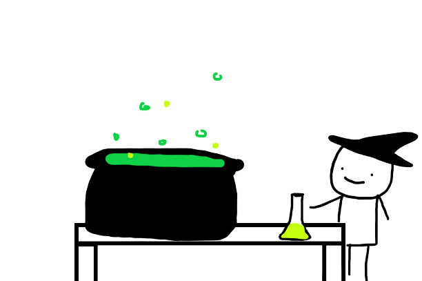
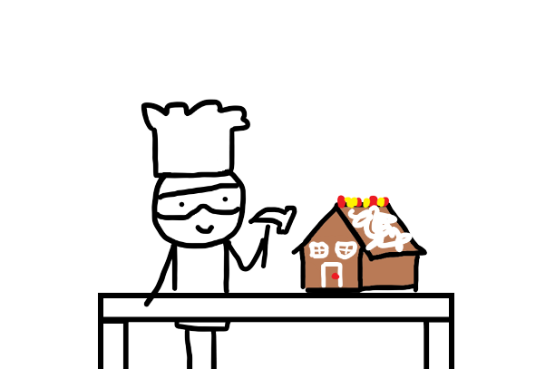
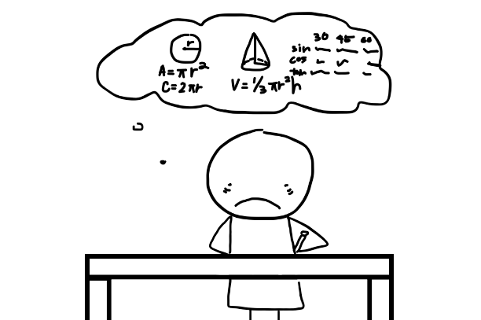
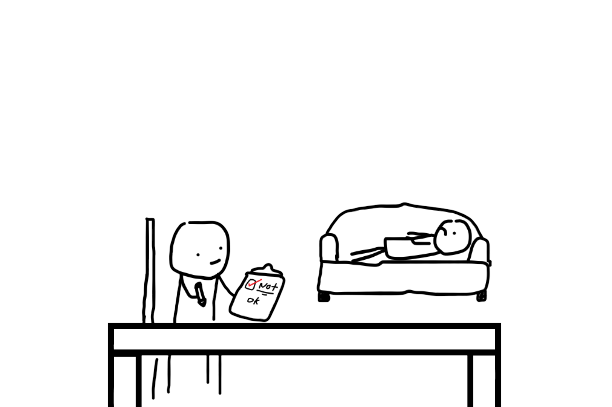

Aerospace
Aerospace Engineering! The major that flies the airplanes and does the NASA stuff.

Architecture
The building major, making things look somewhat decent. I wonder where this major was when they chose this building.
Biology Science
The type of students who saw "dissecting a frog" as interesting.

Chemistry
Yea, yea, you like to mix things, we get it. Go back to your cauldron, witch.

Civil
The "is this architecture" major. The tinkercad masters. Yes, I wonder what this major has been up to with the Broken Tech at this building.

Electrical Engineering
"I saw him vent" -some electrical major. Definitely software rejects.
Environmental Science
Who?
Finance
Math majors but more depressed lol.
Industrial Design
Kids who did not suffer enough in DDP.
Law and Society
Imagine coming to a technical school for law??? Someone didn't like DDP or CSP.......

LIU Advanced Health Professions
The major for doctors yet none of their courses are related to becoming one.

LIU PharmD
The fake doctor major. Couldn't handle people so they went to drugs.

Mathematics
Are you dead inside? Maybe this is the major for you.

Mechatronics & Robotics
Physical software and less cool.

Media
The fake CTE major. Probably LAG rejects.
Physics
Physics majors probably got an apple to the head before deciding.

Social Science Research
Looking to become a therapist or seeking for one within the major?

Software Engineering
The "mega chad" major.